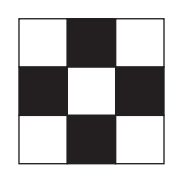

Code7 - Stage 6
Algorithms
Gary Dalton
July 3, 2015
Fork on GitHubAlgorithms
Using tangram shapes and graph paper, the first exercise will show how important it is to make each instruction as clear and unambiguous as possible. Afterward, the class will explore how many ways you can fold paper into a rectangle, noting how some methods can take more or fewer folds than others.
Objective
- Explain that the same thing can be accomplished many different ways, and sometimes there are “better” ways than others.
- Practice creating algorithms that describe real-world directions
- Learn to think about solving a problem many different ways
- Think about creating more “efficient” solutions to problems
Materials
- Tangram Image Pack
- Tangram Pieces
- Graph paper (five or six sheets per pair)
- One piece of blank paper
Vocabulary
Algorithm
A series of instructions on how to accomplish a task
Ambiguous
Having more than one meaning
Efficiency
Having the best outcome for the least amount of work
Evaluate
To work at an answer
Hamburger Fold
To fold a paper in half the wide way
Hot Dog Fold
To fold a paper in half the long way
- Algorithm: A series of instructions on how to accomplish a task
- Ambiguous: Having more than one meaning
- Efficiency: Having the best outcome for the least amount of work
- Evaluate: To work at an answer
- Hamburger Fold: To fold a paper in half the wide way
- Hot Dog Fold: To fold a paper in half the long way
Review and Extend
In Stage 5, The Artist, we drew simple shapes using code blocks

- What did the set color block do?
- How would we use what we learned last time to make a square with different colors on all sides?
Not only can a computer “misunderstand” what you mean for it to do, but you can tell a computer to do the same thing several different ways.
Tangrams
Tangrams are a Chinese geometric puzzle consisting of a square cut into seven pieces that can be arranged to make various other shapes. Our activity has been designed to use the same Tangram pieces as the classic puzzle, but with a twist. We won’t require the use of every single piece each time, and we will be laying our shapes out on graph paper.
Computer instructions
Computers "understand" things differently than we do. Partly, this is because computers can't "guess" what we want based on our tone of voice or our body language. If you tell your friend "Aperture is a hard word. Can you spell that?"" It is very likely that your friend will try to spell "aperture."" If your friend is a computer, however, it would probably spell the word "that." If you give an ambiguous instruction, a computer will evaluate it the way it has been told to, whether it is what you meant or not.
Activity for 2 persons
- The programmer and the computer sit back to back
- The programmer selects a completed picture of shapes
- The programmer uses words and phrases to direct the computer to rebuild the original image (sound effects or body movements are not allowed)
- The computer uses the packet of shapes, graph paper and the spoken instructions to build the image
- Compare the images
- Discuss which instructions worked well and which did not
- Switch roles and repeat steps 1-6 with a new picture

Find something better?
 |
Repeats
Can you think of an easier way to notate back, back, back or move forward and fill 5 times?
Look at these “functions.” What do you suppose they do?
Answers
- Move forward six spaces
- Color 6 blocks in a row
- Color a diagonal line
Activity
- Write a program for a medium size image
- Exchange your program with another coder
- Draw the image from the program
- Verify the image with the original coder
- Repeat steps 1-4 with a large size image
Wrap up
Objectives
- Understand the difficulty of translating real problems into programs
- Learn that ideas may feel clear to them, and still be misinterpreted by a computer
- Realize the need for formal programming structures like loops and functions
Vocabulary
- Algorithm: A series of instructions on how to accomplish a task
- Coding: Transforming actions into a symbolic language
- Debugging: Finding and fixing problems in code
- Function: A piece of code that can be called over and over
- Parameters: Extra bits of information that you can pass into a function